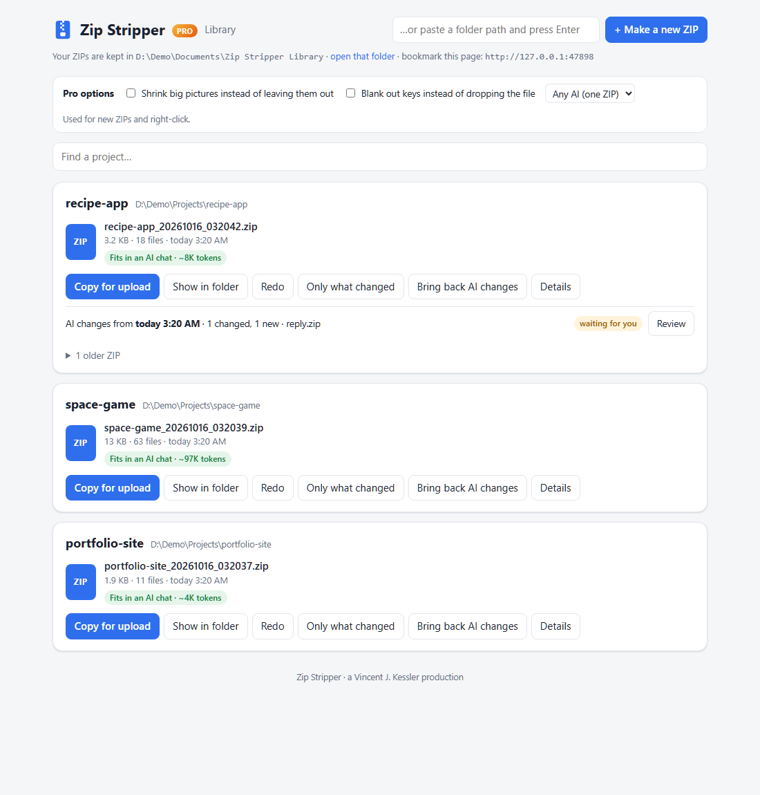
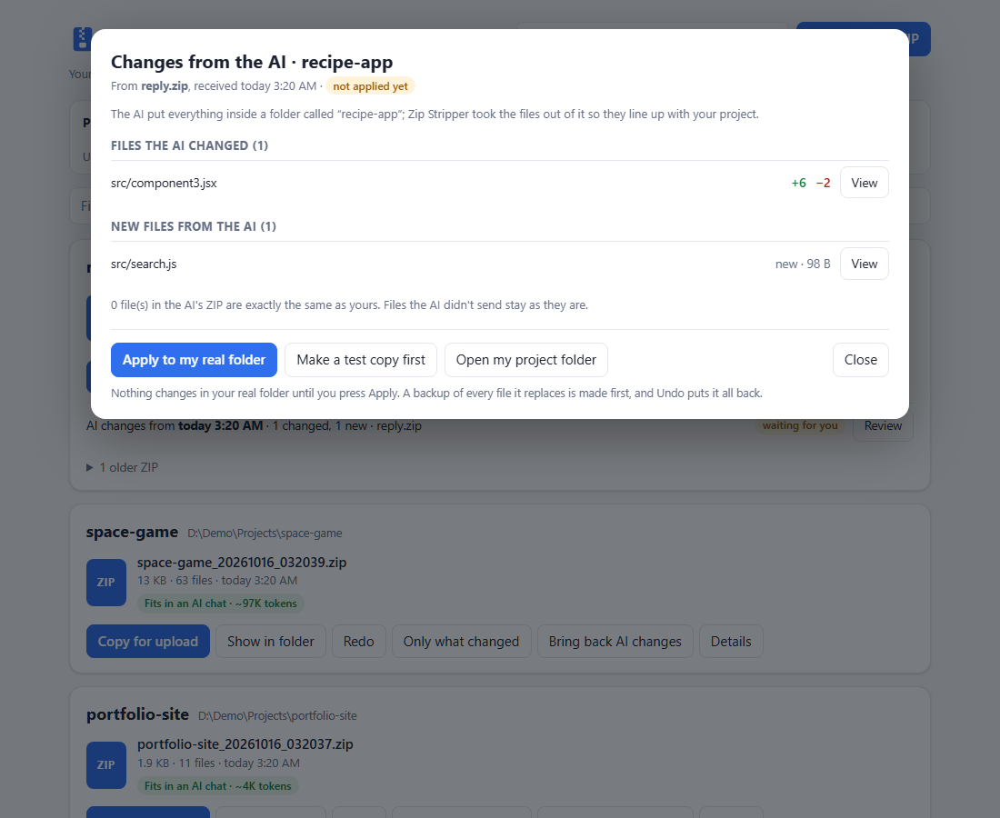

Zip Stripper copies your project, takes out the junk, the giant screenshots and every password it can find, and hands you a clean ZIP for ChatGPT, Claude or Gemini. Your real folder is never touched.

No command line. No uploading 400 MB of node_modules. No accidentally pasting your API key into a chat.
Any folder → Strip & Zip for AI Upload.
Your library page opens on the new ZIP. One button puts the file on your clipboard.
ChatGPT, Claude or Gemini gets a clean project it can unpack and run.
Everything left out is listed in a plain-English receipt, so you always know what the AI did and didn't see.
.env, credentials, certificates, SSH keys, and any file with an API key inside (OpenAI, Anthropic, GitHub, AWS, Google, Stripe…). The key itself is never printed.
Root and nested .gitignore files are respected, so private data stays home.
node_modules, virtual environments, caches, build output, logs, old ZIPs.
Duplicate files go in once. Big screenshots and videos are listed, not shipped. One real project went from 74 MB to 1 MB.
Every ZIP you made, newest first, on a page in your browser. Redo, copy again, or read the receipt any time.
Not one giant text file. The AI gets your folders and files, so it can unpack, run and test your project.
Free gets your project to the AI. Pro gets the AI's work back into your project, safely, and keeps every trip small.
Drop the ZIP the AI gave you onto the page. See exactly which files it changed, line by line. Test it on a copy. Apply with a backup. Undo in one click.
After the first ZIP, send just the files you changed, plus a change list the AI can read.
Most important files first. Too big? It splits into Part 1, Part 2… in a sensible order.
Keep the file, lose the key: <REDACTED: OpenAI API key>. The AI still sees your code.
Smaller copies of big images go in, so the AI can still see your art and screenshots.

Text-digest tools are great for pasting a repo into a prompt. Zip Stripper is for handing a project to an AI and getting it back.
| Zip Stripper | Text-digest tools e.g. Repomix, Gitingest | |
|---|---|---|
| What you get | A real ZIP with your folders | One big text file |
| Secret check, .gitignore, token count | ✓ | ✓ (Repomix) |
| Right-click, no command line | ✓ | – |
| Library of everything you sent | ✓ | – |
| Bring the AI's changes back safely, with undo | ✓ Pro | – |
| Only-what-changed follow-ups | ✓ Pro | – |
No. It copies your project to a temporary folder, cleans the copy and zips it. Bringing AI changes back (Pro) only touches your folder when you press Apply, makes a backup first, and can undo.
No. Zip Stripper runs on your computer. The library page only listens on your own machine. You decide what to paste into which AI.
It catches the common ones: key files, credential files and well-known API-key formats. No pattern check can promise to catch everything, so every ZIP comes with a receipt listing what was found.
New open-source apps aren't code-signed yet. Click More info → Run anyway. You can read every line of the free version on GitHub.
The command-line tool and the library page work anywhere Python runs. The right-click menu and auto-start are Windows-only for now.
No. One payment, and that version is yours.